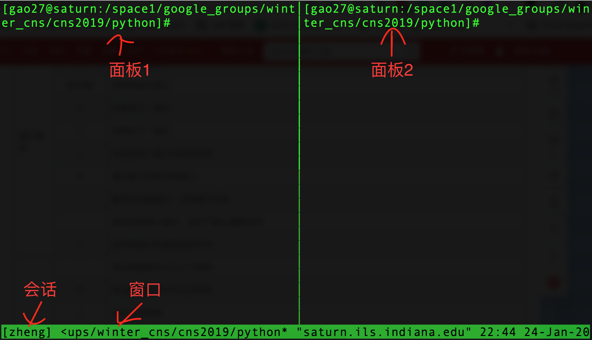

tmux 是一款非常好用的终端管理软件。尤其是在服务器上面运行代码的时候尤为推荐。tmux支持多个窗口，每个窗口又可以分屏操作。这样不需要每开一个窗口都要重新登录下服务器了。同时，即使退出窗口（不是关闭），tmux上跑的代码仍然可以后台运行，这样不需要再用nohup这种命令来离线跑代码了。tmux本身支持很多快捷键操作，本文只介绍一些作者自己常用的命令，其余的可以参考reference里面的链接。
tmux结构
tmux采用C/S模型构建，主要包括三层结构：会话、窗口、面板。一个tmux session（会话）可以包含多个window（窗口），一个window又可以包含多个pane（面板），窗口下的面板，都处于同一界面下，这些面板适合运行相关性高的任务，以便同时观察到它们的运行情况。

安装tmux
在Mac中安装：
1 | # 先安装Homebrew，有则跳过 |
在Linux中安装：
1 | sudo apt-get install tmux |
会话
1.新建会话：
1 | tmux # 新建一个无名称的会话 |
2.断开当前对话：
1 | tmux detach # 断开当前会话，会话在后台运行 |
3.进入之前会话：
1 | tmux a # 默认进入第一个会话 |
4.关闭会话:
我们可以使用tmux的kill命令，kill命令有kill-pane、kill-server、kill-session 和 kill-window共四种，其中kill-session的语法为tmux kill-session -t session-name。如下：
1 | tmux kill-session -t demo # 关闭demo会话 |
5.查看会话：
1 | tmux list-session # 查看所有会话 |
如果已经在会话之中，可以用快捷键ctrl+b+s列出所有会话，移动上下键进行选择。
开启鼠标
在 ~/.tmux.conf 中加入下列设置（tmux 2.1 之前的版本）：
1 | set -g mode-mouse on |
在 tmux 2.1 中，对鼠标模式进行了重写，因此新版只需要增加一段设置即可：
1 | set -g mouse on |
这样在 macOS 中随意滚动进入选择模式后，按住 option 键就用直接用鼠标选择文字，然后再按鼠标中键就能直接复制内容到系统剪切板中了。
这几行配置加到 ~/.tmux.conf 中，然后在tmux里面按 C-b : 执行 source ~/.tmux.conf 即可生效.
常用命令
自己平时会用到的一些tmux命令。更多的命令可见参考文献。
| Ctrl+b | 快捷键 | |
| 系统操作 | ? | 列出所有快捷键；按q返回 |
| d | 脱离当前会话 | |
| D | 选择要断开的会话 | |
| s | 显示会话列表用于选择并切换 | |
| : | 进入命令行模式，此时可直接输入ls等命令 | |
| [ | 进入复制模式，按q退出 | |
| ] | 粘贴复制模式中复制的文本 | |
| 窗口操作 | c | 创建新窗口 |
| & | 关闭当前窗口 | |
| 数字键 | 切换至指定窗口 | |
| p | 切换至上一窗口 | |
| n | 切换至下一窗口 | |
| l | 在前后两个窗口间互相切换 | |
| w | 通过窗口列表切换窗口 | |
| , | 重命名当前窗口；这样便于识别 | |
| . | 修改当前窗口编号；相当于窗口重新排序 | |
| f | 快速定位到窗口（输入关键字匹配窗口名称） | |
| 面板操作 | ” | 将当前面板平分为上下两块 |
| % | 将当前面板平分为左右两块 | |
| x | 关闭当前面板（关闭前需输入y or n确认） | |
| z | 最大化当前面板，再重复一次按键后恢复正常（v1.8版本新增） | |
| ! | 将当前面板移动到新的窗口打开（原窗口中存在两个及以上面板有效） | |
| ; | 切换到最后一次使用的面板 | |
| q | 显示面板编号，在编号消失前输入对应的数字可切换到相应的面板 | |
| { | 向前置换当前面板 | |
| } | 向后置换当前面板 | |
| o | 在当前窗口中选择下一面板 | |
| 方向键 | 移动光标切换面板 | |
| 空格键 | 在预置的面板布局中循环切换；依次包括even-horizontal、even-vertical、main-horizontal、main-vertical、tiled | |
| Alt+方向键 | 以5个单元格为单位调整当前面板边缘 | |
| Ctrl+方向键 | 以1个单元格为单位调整当前面板边缘（Mac下被系统快捷键覆盖） | |
Tricks
- 为了让服务器一直跑进程，可以新建一个tmux页面，然后run
yes.
参考文献: